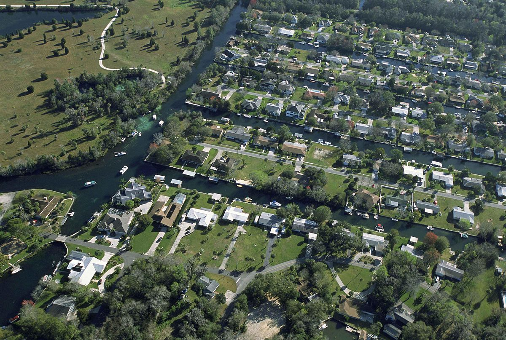

By Caroline James, Staff Writer · April 1, 2025
CHATTAHOOCHEE HILLS, Ga. — A planned landscaping project at the upscale Serenbe community took a chilling turn this week after workers unearthed what authorities are now calling a "potential true crime scene" — the remains of at least two individuals believed to have been buried more than a decade ago.
The discovery was made Monday morning near the edge of the resort's organic farm, where an expansion of the walking trails was underway. A backhoe operator noticed what appeared to be a partial skull and immediately stopped work, according to Chattahoochee Hills Police Chief Marcus Bell.
By Tuesday afternoon, the GBI's crime scene unit had cordoned off the area, and forensic anthropologists were carefully excavating what Chief Bell described as "a clandestine burial site."
“Given the condition of the remains and early forensic indicators, we believe these individuals may have been deceased for at least 10 to 15 years,” Bell said at a Wednesday press briefing. “We are treating this as a homicide investigation until we have reason to believe otherwise.”
Serenbe, a master-planned wellness community known for its luxury homes, farm-to-table cuisine, and eco-friendly ethos, sits roughly 30 miles southwest of Atlanta. The discovery has rattled residents of the otherwise tranquil enclave.
“We moved here for the peace, the nature, the quiet,” said Serena Mitchell, a resident of the Grange neighborhood within Serenbe. “To think something like this was here the whole time… It’s shocking.”
Law enforcement officials have not released the identities of the victims and declined to say whether there were any immediate suspects. However, sources close to the investigation say cadaver dogs have indicated the presence of additional remains nearby.
“There’s some indication this could be larger than just two individuals,” said one official, who spoke on condition of anonymity due to the ongoing investigation.
The GBI is reviewing missing persons cases dating back to the early 2000s and has requested assistance from the FBI’s Behavioral Analysis Unit.
Serenbe founder Steve Nygren issued a brief statement Wednesday afternoon: “We are cooperating fully with law enforcement and are focused on the safety and well-being of our residents and guests. Serenbe has always been a place for community and healing — this is a heartbreaking moment.”
The scene remains closed to the public as investigators continue to process evidence. Residents have been advised to report any unusual findings or recollections from the past that could assist in the investigation.
Anyone with information is encouraged to contact the Chattahoochee Hills Police Department tip line at (404) 555-0199.
This is a developing story and will be updated as more information becomes available.